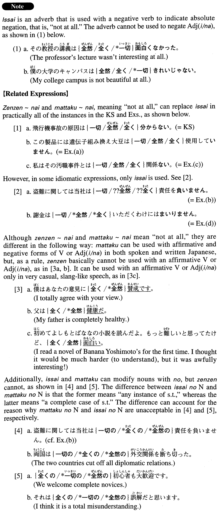

←
DoJG
→
一切～ない
(A. 159)
Example sentences
(ks).
飛行機事故の原因は
一切
分から
ない
。
We have no idea what caused the airplane accident.
(a).
この製品には遺伝子組み換え大豆は
一切
使用して
いません
。
For this product we haven't used any genetically modified soybeans at all.
(b).
盗難に関しては当社は
一切
責任を負
いません
。
Our company will not take any responsibility whatsoever for thefts.
(c).
私はその汚職事件とは
一切
関係
ない
。
I have nothing whatsoever to do with the bribery scandal.
(d).
謝金は
一切
いただくわけにはまいり
ません
。
I couldn't possibly accept any honorarium at all.
(e).
私は有害物質を
一切
含んで
いない
洗剤を使うことにしている。
I make it a rule to use detergents that contain no harmful ingredients.
Formation
一切
Vnegative
ない
一切
食べ
ない
Someone doesn’t eat a thing
一切
読ま
ない
Someone doesn’t read at all
